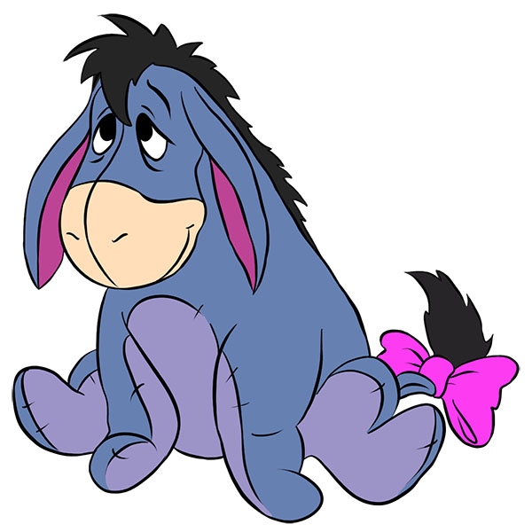

About Winnie
Winnie-the-Pooh is a fictional anthropomorphic teddy bear created by English author A. A. Milne and English illustrator E. H. Shepard.
Winnie-the-Pooh first appeared by name in a children's story commissioned by London's Evening News for Christmas Eve 1925.
The character is inspired by a stuffed toy that Milne had bought for his son Christopher Robin in Harrods department store,
and a bear they had viewed at London Zoo. Winnie-the-Pooh first appeared by name in a children's story commissioned by London's
Evening News for Christmas Eve 1925. The character is inspired by a stuffed toy that Milne had bought for his son Christopher Robin
in Harrods department store, and a bear they had viewed at London Zoo.
Winnie's friends
